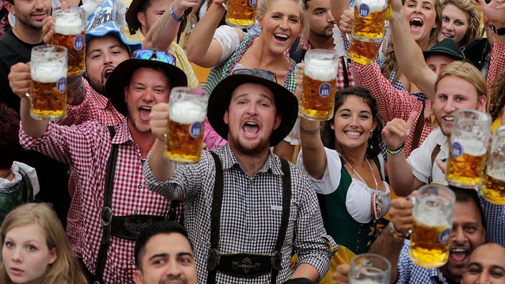
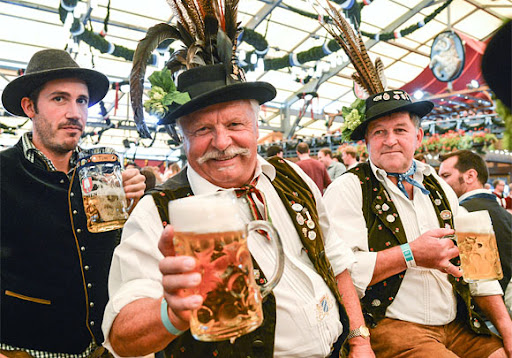
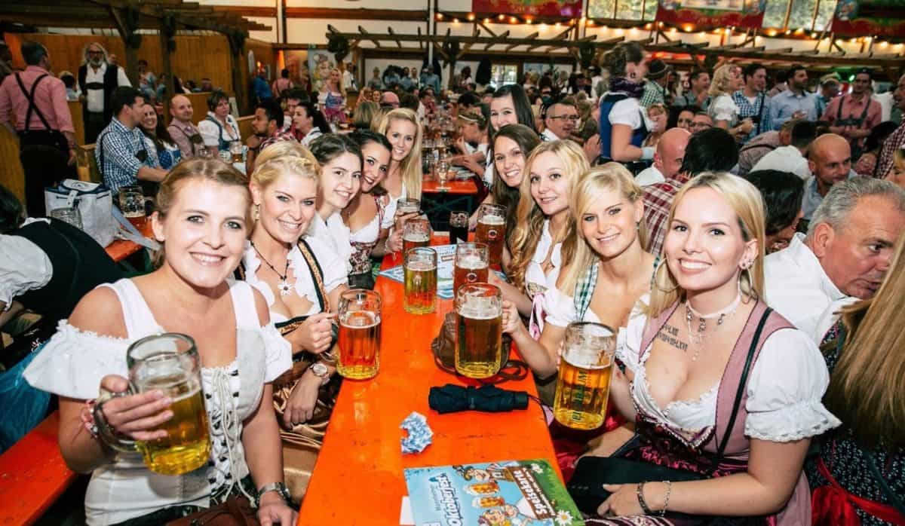

Окто́берфест (нім. Oktoberfest, досл. «Свято жовтня»; простонародне нім. d’Wiesn, від нім. Wiese «лука», назви місця, де проводиться свято) — найбільший пивний фестиваль у світі. Проходить в Мюнхені щороку (з 1810 року) наприкінці вересня — на початку жовтня і триває два тижні.
Народження найбільшого у світі фестивалю пива датоване 12 жовтням 1810 року. Як розповідає нам історія, цього дня баварський кронпринц Людвіг, згодом король Людвіг I, одружився із принцесою Терезою Саксонія-Хільдбургхаузен. Для того щоб дати можливість простолюдинам прийняти участь у церемонії, благородна пара вирішила влаштувати грандіозне весілля для своїх підданих на декількох пасовищах поза межами міста Мюнхена. Усього на святкуванні зібралось біля 40 тисяч щасливих баварців. А місцина, де відбулося дійство, з тих пір отримала назву "Theresienwiese", що означає "Луг Терези" - на честь принцеси. Схоже, що Людвіг був закоханим до нестями, оскільки святкування повторювалося кожного року у річницю їхнього весілля. А сьогодні "Theresienwiese" (відомий серед місцевих жителів, як "Wien's" - луг) досі є місцем щорічної грандіозної події - мюнхенського фестивалю пива Октоберфест.
Свято пива «Октоберфест» являє собою традиційний парад мюнхенських і баварських броварень (інші пивні компанії до участі у фестивалі не допускаються), а також двохтижневий бенкет-гулянку в спеціально влаштованих на традиційному місці майданчику «Луг Терези» (нім. Theresienwiese, Терезієнвізе) великих шатрах-пивних павільйонах. Наприклад, 2008 року, коли фестиваль проводився в 175-е (від 20 вересня по 5 жовтня), таких наметів було 14, місткістю до десяти тисяч відвідувачів кожен.До різних сортів пива, яке наливають у традиційні «октоберфестівські» кухлі (бл. 1 л.), подають традиційні ж баварські ковбаски, а також солоні крендлі. Відмітною рисою октоберфестівських офіціантів (кельнерів) є утримання великого числа кухлів у руках (до 10 в одній руці).
Відвідувачів також розважають музикою, співами, народними баварськими танцями, розіграшами та іншими веселощами. Закінчення святкування в октоберфестівському шатрі знаменується загальними співами баварських пісень і танцями. Паралельно з бенкетами в шатрах вирує ярмарок на Терезієнвізе, працюють атракціони.
  Цікаві факти про фестиваль